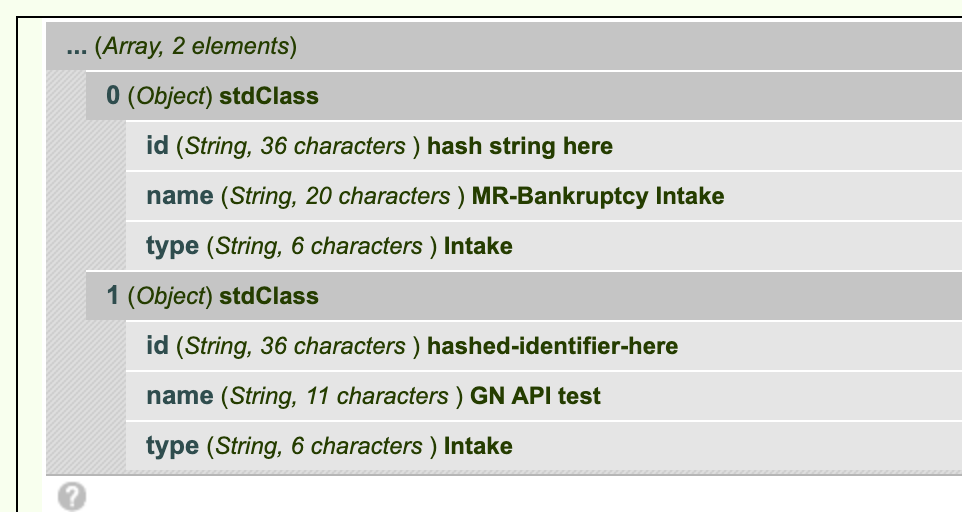
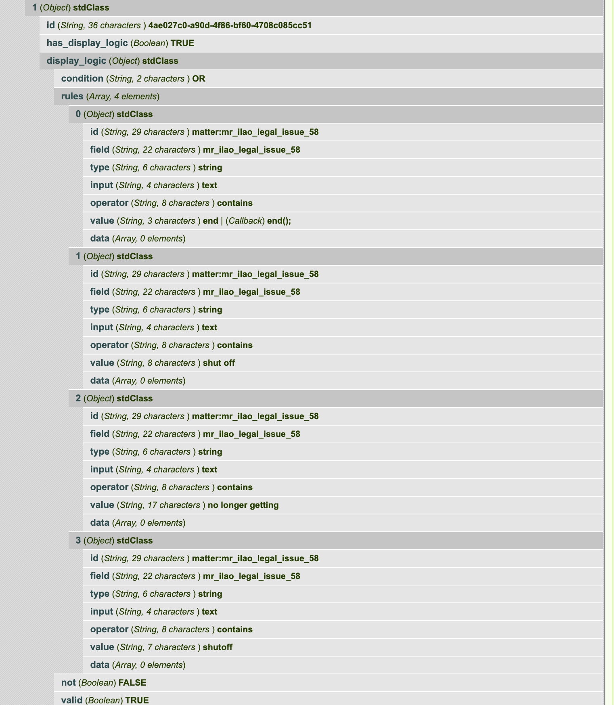

Guided Navigation API Docs¶
Stored variables¶
ILAO stores in Drupal configuration:
- API Server location (https://[sitename].legalserver.org/api/v1/processes for example)
- Username authorized to use API
- Password associated with the username
API Invocations¶
Get list of processes¶
This code snippet returns the list of processes available to Guided navigation
$gn = ilao_gn_load_keys();
$url = $gn['server'];
$ch = curl_init();
curl_setopt($ch, CURLOPT_URL, $url);
curl_setopt($ch, CURLOPT_RETURNTRANSFER, 1);
curl_setopt($ch, CURLOPT_HTTPAUTH, CURLAUTH_BASIC);
curl_setopt($ch, CURLOPT_USERPWD, $gn['user'] . ':' . $gn['pass']);
$result = curl_exec($ch);
$processes = json_decode($result);
return $processes;
The resulting json contains an array of objects. The objects contain:
- id. This id is used throughout the system to identify which guided navigation process is involved in a transaction.
- name. The name in LegalServer of the process
- type. The type of process
When decoded, in Drupal this results in an array of objects as follows:
Start a new session for a specific Guided Navigation process¶
$gn = ilao_gn_load_keys();
$url = $gn['server'] . '/' . $intake_id . '/sessions';
$ch = curl_init();
curl_setopt($ch, CURLOPT_URL, $url);
curl_setopt($ch, CURLOPT_CONNECTTIMEOUT, 20);
curl_setopt($ch, CURLOPT_CUSTOMREQUEST, "POST");
curl_setopt($ch, CURLOPT_POST, true);
// curl_setopt($ch, CURLOPT_POSTFIELDS, $data_string);
curl_setopt($ch, CURLOPT_RETURNTRANSFER, true);
curl_setopt($ch, CURLOPT_USERPWD, $gn['user'] . ':' . $gn['pass']);
curl_setopt($ch, CURLOPT_SSL_VERIFYPEER, false);
curl_setopt($ch, CURLOPT_HTTPAUTH, CURLAUTH_BASIC);
curl_setopt($ch, CURLOPT_HTTPHEADER, array(
'Accept: application/json',
'Content-Type: application/json')
);
$result = curl_exec($ch);
$start = json_decode($result);
return $start;
Note
in the above example, $intake_id represents the process ID from the list of processes.
{"process_session_id":"523d0bc8-9f4d-473e-94cd-510ae576e160",
"profile":{"id":"fcdc0494-0190-11eb-995e-0e8d40a13cd5"},
"profile_by_element_id":{"9f992bff-adca-4ae2-a6e4-9b478573b298":null,
"25428520-5992-4638-ab45-a325af4f086b":null},
"form":{"id":"5ef8cb29-0d0e-457b-a8a6-4d6b2983344a",
"elements":[{"id":"9f992bff-adca-4ae2-a6e4-9b478573b298",
"has_display_logic":false,
"display_logic":null,
"field_name":"mr_service_area_49",
"label":"What service area do you live in?",
"type":"field",
"field_type":"select",
"validation_rules":[],
"value":null,
"options":[{"value":1,
"label":"Cook"},
{"value":2,
"label":"PSLS"},
{"value":3,
"label":"LOLLA"}],
"is_multiple":false},
{"id":"25428520-5992-4638-ab45-a325af4f086b",
"has_display_logic":false,
"display_logic":null,
"field_name":"mr_ilao_legal_issue_58",
"label":"Please describe your legal issue",
"type":"field",
"field_type":"text",
"validation_rules":[],
"value":""}],
"validation_errors":[],
"is_complete":false,
"should_show_previous":false}}
The resulting JSON when decoded into a Drupal format results in
- a process_session_id (string). This is used for the entire user’s session
- a profile (object). This is updated over time as new data is gathered
- a profile_by_element_id (object).
- a form object. This contains all the information about the form to display.

Elements¶
The heart of the form is the elements.

Every (form) element has:
- a unique id
- a boolean to indicate whether there display logic.
- display_logic, which has data when has_display_logic is TRUE.
- a type. Known supported types are field, headline
Fields¶
Known supported field types are select, text, bool,
Form fields will have: * a field_type which indicates the type of field * a value field * validation_rules as an array, when the field has validation rules. * a value. This may be pre-filled with a default value from Guided Navigation.
Select¶
A select field will have:
- a field_type of select
- an array of options. Each option is an object with a value and a label. The label is shown to the user while the value is stored and shared back to Guided Navigation.
- a boolean of is_multiple. When this is true, the field is a multiselect and/or checkboxes. When the value is false, the field is a single select or radio buttons.
- a value. This may be pre-filled with a default value from Guided Navigation.
Text¶
- a field_type of text
Bool¶
- a field_type of bool
- no options; these should be Yes, No with values of t and f
Non-field Elements¶
Instructions¶
Headline¶
A headline is just HTMl-formatted text. A headline will have:
- a type of headline
- an html_value
Display logic¶
When the element’s has_display_logic is true, the display_logic property will have data.
The display_logic property will be an object with: * a condition property. Expected values are AND, OR. When there are multiple rules, this condition sits between them * a rules property. This is an array of rules to test for * a not boolean. When this is true, the rules should be tested as NOT. * a valid boolean. It is unclear what the purpose of this is.
Rules¶
Rules is an array that contains the conditions to test against. Each element in the array contains an object with:
- an id
- field, which represents the field to test against. This can be found in the profile from Guided Navigation for a particular session
- type (known types: string)
- input
- operator. Known types are contains, not_contains, equal, not_equal, begins_with, in, is_empty, is_not_empty,
- value. This is either a string (for contains, not contains) or an array of values (for in operators)
- data. For in operators, this is the data to test against.

In the above, the element would display if the field mr_service_area_49 had a value IN (1)
In the above, the element would display if the mr_ilao_legal_issue_58 had a value that contains ‘end’ OR’shut_off’ OR ‘no longer getting’ OR ‘shutoff’
Validation Rules¶
Validation rules for an element, if not empty, is an array of rules. Each element is an object with a proprety of type. A type of required is the most common and indicates that a form element should be required.